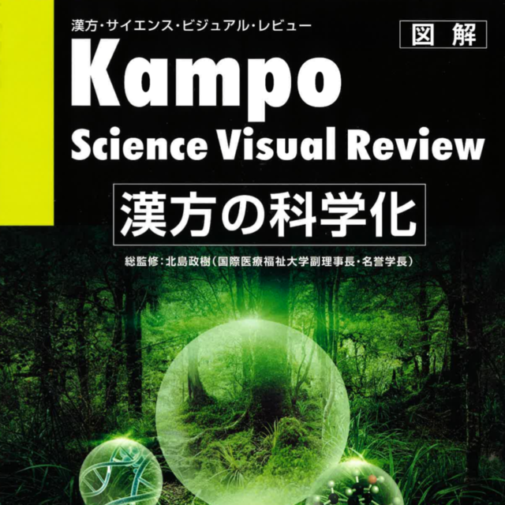

검사와 진찰, 아이의 생활을 연결합니다.
- 01객관적 확인
- 02한의학적 진찰
- 03생활의 변화
| 구분 | 살펴볼 점 | 알려주실 내용 |
|---|---|---|
| 검사와 기록 | 기존 진료와 검사 결과 | 받았던 검사·치료 자료 |
| 아이의 일상 | 식사·수면 등 생활의 변화 | 집에서 관찰한 모습 |
| 진료 방향 | 진찰과 기록을 함께 살피기 | 현재 복용하는 약과 궁금한 점 |
궁금한 항목을 펼쳐보세요.
필요한 설명과 자료를 주제별로 확인할 수 있습니다.
01소아 진료, 통합적 관점으로＋
소아 진료, 통합적 관점으로
아이들 치료는 더 안전하고 통합적인 이해가 필요합니다.
02아이에게 사용하는 한약, 걱정되고 궁금합니다.＋
아이에게 사용하는 한약, 걱정되고 궁금합니다.
소아 한약은 전통적인 사용 경험과 현재의 근거, 아이의 연령·상태를 함께 살펴 처방합니다. 오랜 사용 경험만으로 안전성을 단정하지 않습니다.
게다가 한의학이 가진 개인 맞춤식 진료의 장점에 더해, 최근에는 점차 과학적이고 객관적인 데이터도 쌓여가고 있습니다.
그것도 전 세계적인 흐름입니다.
예를 들어 일본과 대만에서는 아이들의 독감 진료에 한약 단독으로 처방하는 경우가 많습니다.
미국의 소아병원에서는 아픈 아이들에게 소아침을 시술하고 있습니다. 전세계적으로 점차 광범위하게 알려지고 있습니다.
I 근거중심 한의학, 현재
"한의학도 과학적 근거가 있나요?"
최근 EBM(근거중심의학)의 중요성이 대두되고 있습니다. 아니 세계적으로 볼 때는 이미 조금 지난 트렌드로 봐야할 지도 모르겠네요.
한국에서와는 달리 해외에서는 이미 과학적인 진료의 한계를 인정하고 개인화된 진료, 맞춤식 진료로 트렌드가 옮겨가고 있으니깐요.
하지만 한의학은 이미 개인맞춤식이었고, 그렇다면 과학적 근거가 얼마나 있는 것인지
오늘은 이부분에 대해 해외 석학의 글을 잠시 인용해서 풀어써볼까 합니다.
중국과 한국에는 한의사, 중의사 제도가 있습니다.
일본은 의사들 중 동양의학 전문의과정을 수료한 의사(한방전문의/인정의)가 한약을 처방합니다.
따라서 현실적인 제약이 있는 한국과는 달리 중국, 일본의 경우 한약과 한의학에 매우 열려있습니다.
(개인적으로는 한의사 제도를 말살 시키려했던 일제강점기가 원망스럽네요.)
과학적 한의학..
이미 한의학 치료 중에는 이러한 방법을 사용한 보고가 일본에서만 이미 350건 이상으로, 한의학의 유용성을 객관적으로 평가하고 있습니다.
중국과 해외는 그 수가 더 많습니다.
독일, 영국, 캐나다 등을 비롯해 케냐, 터키, 브라질과 같은 생소한 나라들도 이런 노력을 지금도 계속하고 있습니다. 다만 알려지지 않았을 뿐이죠.

과학적 근거만을 내세우라는 일부의 주장에 대해
예를 들어보겠습니다.
EBM Level 1이라고 불리우는 것에는 RCT(Randomized Control Trial)이 있습니다.
하지만 한의학적 진료내용을 모두 RCT라고 불리우는 서양의학적인 체계에 무조건 맞춰서 평가해야만 할까요?
변증치료라는 원칙에서 볼때, 동병이치, 이병동치라는 측면에서 볼 때, 환자의 개개인을 시간에 따른 전신상태를 기초로 치료하는 한의학을 단일한 약효를 검증하는 것을 목적으로 하는 RCT에 무조건적으로 적용하는 것은 너무 한의학을 한정적으로 바라보는 것이 아닐까 하는 것이 제 솔직한 생각입니다.
RCT에 너무 집착해버리게 된다면,
'RCT결과가 없다면 그 약은 사용할 수 없다.' 고 하는 일종의 ‘이데올로기’에 빠져버릴 수도 있습니다.
플레밍이 발견한 페니실린을 처음부터 세균성폐렴에 확실히 효과가 있다고 알고 임상에서 응용한 것은 아닙니다.
1922년 세계에서 처음으로 인슐린을 1형 당뇨병환자에 투여한 경우도 엄밀한 결과를 근거로 하여 사용된것도 아닙니다.
'in vitro'에서 확인되는 작용기전이 'in vivo'에서도 유효한지 아닌지는 현장에서 실제로 체험하기 전까지는 알 수 없습니다.
의료에서 가장 중요한 것은 적절한 근거를 기반으로 실제 임상 현장에서의 경험과 집적이 아닐까 생각합니다.
"조금 더 열린 자세로"
동아시아 전통의학은 수천년을 이어온 역사가 있습니다.
이러한 흐름을 이어가는 의학 역사가 무엇보다도 근거가 된다고 저희 역시 생각하고 있습니다.
서양의학이 우리나라에 들어온지 100년이 조금 넘었습니다.
또한, 전통적으로 행해져온 한방치료가 대한민국 국가의료보험체계의 정식일원이 된지는 그보다도 더 짧습니다.
한약이 과학적으로 검증되고, 과학적인 근거를 바탕으로 설명되기 시작한 것은 이제 겨우 수십년밖에 되지 않습니다.
한방 소아과 전문진료가 사람들에게 널리 알려지기 시작한 것은 그보다도 짧습니다.
지금도 많은 열정적인 한의사, 한의학자, 과학자들은 한방치료의 체계, 근거, 약물, 치료방법등에 대해서 객관적으로 연구와 실험을 지속하고 있습니다.
한의학 역시 동의보감 시대의 그것에 머물러있지 않습니다.
과학, 객관이라는 기반하에 한의학의 근거누적은 현재 진행 중이며, 이는 젊고 열정적이고 똑똑한 한의사들의 주도로 앞으로도 계속될 것이라고 생각합니다.
기존 한의학이 가지고 있는 경험적 장점을 인정하고 부족한 부분은 앞으로 지속적인 연구로 채워넣습니다.
한의학에 지나치게 가혹한 일부 과학적 방법론의 한계도 인정하며 조금 더 열린 자세로 접근한다면 아마도 더 나은 미래 의학이 우리 앞에서 기다리고 있지 않을까요.
I 현대 한의학, 미래의학
장중경의 ‘상한론’은 감염증을 주로 취급한 동양의학의 고전입니다만,
서양근대의학에 의한 감염증 연구의 시조라고 한다면 로베르트 코흐(1843-1910)을 들 수 있을 것입니다.
19세기 후반 코흐는 탄소균, 결핵균, 콜레라균을 차례로 발현하고, 감염증과 병원체의 관계를 규명했습니다.
그가 정립한 코흐의 원칙에 의해서 세균미생물학이 눈부시게 발전하고 수많은 감염증에 대해서 항균약에 의한 치료가 가능해진것은 물론 대단한 일입니다.
하지만 21세기에 살아가는 우리들에게 처해진 상황은 그 연장선에서 모든 문제가 해결될 정도로 단순하지만은 않답니다.
예를 들어 일화견감염(일반인들이 쉽게 감염되지 않는 균이 면역이 저하된 사람에게 감염되는 경우)과 같이 통상적으로 병원성을 가지지 않은 미생물이 감염증을 일으키는 경우도 있습니다.
최근 발병하는 각종 바이러스성 전염병도 마찬가지입니다.
병원성의 문제에 대해서는 그 존재에 대한 설명 뿐 아니라 독성이 강한가 약한가에 대한 시점에서 생각할 필요가 있습니다.
또한 당뇨병이나 고혈압 등 생활습관병은 특정한 원인이 제거되면 치료되는 것이 아니라서, 전통적인 서양의학의 개념으로는 설명이 어렵습니다.
최근 인간게놈연구의 발전에 의해서 개개인의 DNA정보를 베이스로 한 개별의료, 개인 맞춤식 의료가 언급되는 정도까지 이르게 되었습니다.
하지만 한의학은 병명에 대한 획일적인 치료를 하는 것만을 추구하지 않습니다.
'증'과 '체질'이라고 하는 관점을 가지고 환자 개개인의 특정시기 상태를 혼합한 처치를 시행한다는 의미에서 본다면 동양의 전통의학이야말로 ‘개별 의료’라고 할 수 있지 않을까요?
물론, 현대 의료의 기초인 서양의학은 지금도 발전해가고 있으며, 의사, 한의사 할 것 없이 이것을 배워가며 환자의 진료를 할 때 참고하지 않으면 안된다고 생각합니다.
하지만 서양의학에 국한되지 않고, 많은 임상의들이 한의학적인 지견을 가지게 된다면 한명 한명 환자에게 공헌하는 의료를 행할 수 있다고 저는 생각합니다.
서양의학과 동양의학이 공존하는 국가의료시스템인 건강보험제도를 가지고 있는 우리나라의 토양이야말로
서로의 경험과 근거를 나누며 진료를 발전시킬 수 있는 기반이라고 생각합니다.
새로운 현대 한방소아의학의 치료는 앞으로도 발전해 나갈 것입니다.
그 열매를 지금 이 글을 보시는 분들께 꼭 드리고 싶습니다.
아이와 진료 오기 전, 함께 챙겨주세요.
집에서 본 아이의 모습
가장 불편한 점과 시작한 때, 식사·잠·활동에서 달라진 모습을 알려주세요.
검진 기록과 복용약
가지고 있는 성장·검진 기록, 검사 결과와 약 이름을 챙겨주세요. 알레르기 이력도 함께 알려주세요.
아이도 궁금한 이야기
아이의 걱정과 보호자의 질문을 함께 나눠주세요. 이전 진료에서 어려웠던 경험도 좋습니다.
이 안내는 건강에 대한 이해를 돕는 참고 정보입니다. 증상과 질환에 대한 정확한 판단은 의료진의 진료가 필요합니다.